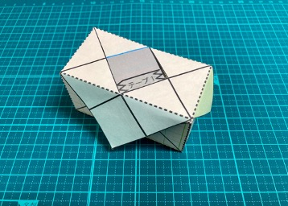
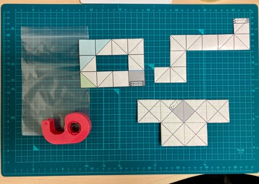

2022年度 冬のLAシンポジウム 付録
予稿 : pdf，スライド : pdf / pptx
√2 x √2 x 2√2 の格子直方体における重なり方の確認
完成イメージ

必要なもの
- はさみ（現地でサンプルを使う人は不要です）
- セロテープ
- 以下からダウンロード，印刷した紙（サンプルでお配りしています）
準備（下図を参考にしてください．こちらもサンプルをお持ちの方は不要です．）
- 印刷した紙，外枠に沿って切ります
- ファイル2から切り抜いたL字の紙をテープで張り合わせます（重なるようになります）

組み立て
- ファイル1から切り抜いた紙をテープで張り合わせて組み立てます【動画1】（サンプルを使っていない方へ注意：動画では，すでに1箇所をテープを留めています）
- ファイル2から切り抜き，テープで貼り合わせた方の紙を巻き付けます【動画2】
観察
- 桃色，水色，薄緑色の三角形は，パタパタと自由に折り曲げることができることが分かります．また，いずれかの場所を折り曲げなかった場合，√2 x √2 x 2√2 の格子直方体を大きくしていくことができることが分かります．【動画3】
オプション
- ファイル2から切り抜いた，もう一方の紙（W字の方）を巻き付けることで，√2 x √2 x 2√2 の格子直方体の全体に巻き付けることができます．林檎の皮剥きのようにグルグルと切っていくと，重なってしまうことがあるということが見てとれるかと思います．